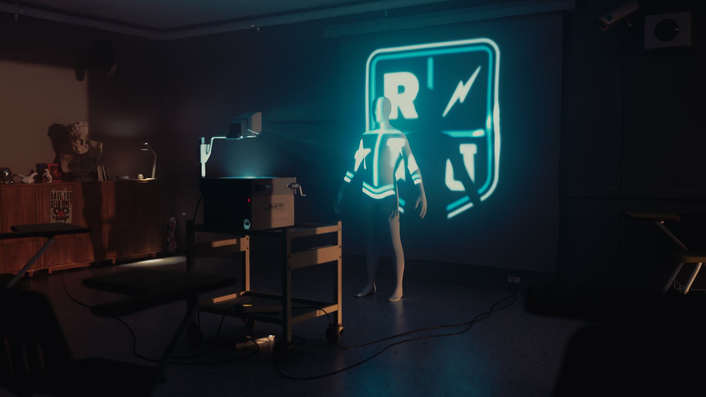

RenderMan Loves USD（RenderMan 热爱 USD）在这里你会找到一系列有用的建模技巧与诀窍。无论你是刚接触建模，还是经验丰富的建模师，这里都有适合你的内容！了解 Pixar 如何创建更利于渲染的模型，以及其他有用信息。出色的渲染始于出色的模型！ /wiki/spaces/RU/pages/393183261 What is a Primvar?（什么是 Primvar？）一节介绍 primvar 是什么以及如何利用它们的课程